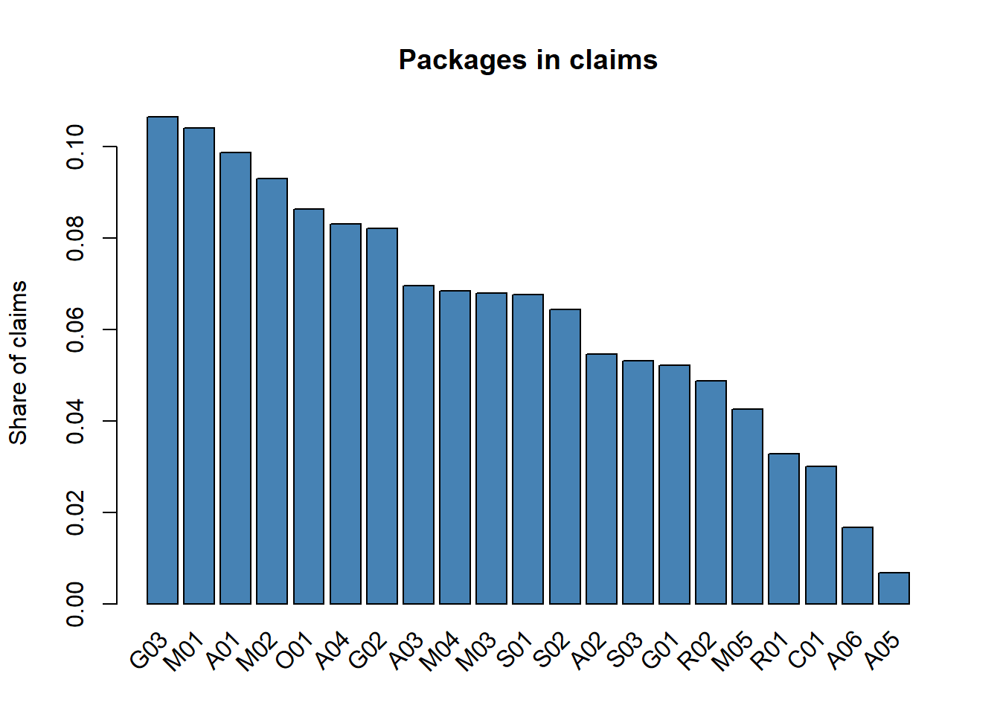

45 Association Rules (Apriori)
Some things tend to happen together. A customer who buys bread often buys butter too. A patient who undergoes a heart angioplasty usually needs a stay in the ICU. A firm that bids in a tender may always seem to bid alongside the same two or three other firms.
Association rule mining finds such patterns automatically. It looks at a large number of baskets, and finds which items appear together more often than chance would explain. It then states these patterns as simple rules, like
If a claim has an angioplasty, then it also has an ICU stay.
The method was first made popular for analysing shopping baskets in supermarkets, so it is also called market basket analysis. The most widely used algorithm for it is called Apriori.
The ideas of basket and item are very general. A basket can be anything that groups items together, as these examples show.
| Basket | Items | What a pattern may reveal |
|---|---|---|
| A hospital claim | Treatment packages billed | Unbundling, unneeded add-ons |
| A tender | Firms that bid | A cartel of firms bidding together |
| A purchase order | Items purchased | Purchases split across orders |
| A system user | Roles or rights assigned | Conflicting rights, like creating a vendor and approving its payment |
| A beneficiary | Schemes availed | Benefits that should not be drawn together |
| An audit report | Types of observations | Problems that tend to occur together |
In this chapter, we will work through two examples in detail. First, the health insurance claims of the imaginary Sarvajan Swasthya Yojana, which we used in the last two chapters. Second, bids received in tenders, to look for collusion among bidders.
45.1 Prerequisites
We will use the package arules, along with tidyverse.
arules has some functions with the same names as functions in base R or tidyverse. If you load it after tidyverse and later get a strange error from a familiar function, call the function with its package name, like dplyr::recode(). We discussed such conflicts in the section on packages and libraries in the first chapter.
45.2 Example 1, packages billed together in health claims
45.2.1 The data as baskets
Let us read the claims of the SSY scheme. The data is described in Chapter 43 and Section B.2.
# A tibble: 6 × 3
claim_id hospital_id packages
<chr> <chr> <chr>
1 CL000001 H001 M04
2 CL000002 H001 G02
3 CL000003 H001 S01;A04
4 CL000004 H001 M04
5 CL000005 H001 M01;A01
6 CL000006 H001 M02;A02 Each claim is a basket. Its items are the packages in the packages column, separated by ;. The first package is the main treatment, and the rest are add-ons. Let us recall the codes.
# A tibble: 21 × 2
package_code package_name
<chr> <chr>
1 M01 Acute febrile illness
2 M02 Acute gastroenteritis
3 M03 Pneumonia
4 M04 Dengue fever
5 M05 Diabetic ketoacidosis
6 S01 Appendectomy
7 S02 Inguinal hernia repair
8 S03 Laparoscopic cholecystectomy
9 G01 Hysterectomy
10 G02 Caesarean delivery
11 G03 Normal delivery
12 O01 Cataract surgery with lens
13 R01 Total knee replacement
14 R02 Fracture fixation
15 C01 Coronary angioplasty
16 A01 ICU stay (add-on)
17 A02 Blood transfusion (add-on)
18 A03 CT scan (add-on)
19 A04 Ultrasound abdomen (add-on)
20 A05 Diagnostic laparoscopy (add-on)
21 A06 Intraocular lens (add-on) arules needs the data in a special format, called transactions. The simplest way to create it is from a list, where each element of the list is the vector of items of one basket. str_split() from stringr gives us exactly that.
$CL000001
[1] "M04"
$CL000002
[1] "G02"
$CL000003
[1] "S01" "A04"Now we convert the list into transactions with the function transactions().
trans <- transactions(baskets)
transtransactions in sparse format with
33476 transactions (rows) and
21 items (columns)So we have 33,476 transactions (claims) and 21 distinct items (packages). summary() gives more details.
summary(trans)transactions as itemMatrix in sparse format with
33476 rows (elements/itemsets/transactions) and
21 columns (items) and a density of 0.06331615
most frequent items:
G03 M01 A01 M02 O01 (Other)
3564 3480 3303 3114 2890 28160
element (itemset/transaction) length distribution:
sizes
1 2 3 4
23450 9046 951 29
Min. 1st Qu. Median Mean 3rd Qu. Max.
1.00 1.00 1.00 1.33 2.00 4.00
includes extended item information - examples:
labels
1 A01
2 A02
3 A03
includes extended transaction information - examples:
transactionID
1 CL000001
2 CL000002
3 CL000003The part element (itemset/transaction) length distribution shows how many claims have 1, 2, 3 or 4 packages. Most claims have just one package, the main treatment. The rest have one or more add-ons.
We can see how often each item appears with itemFrequencyPlot() (Figure 45.1).
itemFrequencyPlot(trans, topN = 21, col = "steelblue",
main = "Packages in claims", ylab = "Share of claims")
45.2.2 Three measures, support, confidence and lift
Before running Apriori, we must understand three simple measures. Let us take one rule as an example.
{C01} => {A01}, that is, if a claim has a coronary angioplasty (C01), then it also has an ICU stay (A01).
The left side, {C01}, is called the antecedent or lhs (left-hand side). The right side, {A01}, is the consequent or rhs (right-hand side). Let us count the claims we need.
has_C01 <- str_detect(claims$packages, "C01")
has_A01 <- str_detect(claims$packages, "A01")
n_total <- nrow(claims)
n_C01 <- sum(has_C01)
n_A01 <- sum(has_A01)
n_both <- sum(has_C01 & has_A01)
c(total = n_total, C01 = n_C01, A01 = n_A01, both = n_both)total C01 A01 both
33476 1010 3303 897 Support is the share of all baskets that contain both sides of the rule. It tells how common the pattern is.
support <- n_both / n_total
support[1] 0.02679532About 2.7% of all claims have both an angioplasty and an ICU stay.
Confidence is the share of baskets with the left side that also have the right side. It tells how reliable the rule is.
confidence <- n_both / n_C01
confidence[1] 0.8881188Of all claims with an angioplasty, 89% also have an ICU stay.
Lift compares the confidence with how common the right side is anyway. It tells whether the two items are really linked, or just both common.
lift <- confidence / (n_A01 / n_total)
lift[1] 9.00111Only 10% of all claims have an ICU stay. But among angioplasty claims, 89% do. That is 9 times more than usual. So the lift is 9.
| Lift | Meaning |
|---|---|
| Close to 1 | The items appear together about as often as chance would give. No real link. |
| Well above 1 | The items appear together much more often than chance. A real link. |
| Below 1 | The items tend to avoid each other. |
Support tells how big a pattern is. Confidence tells how dependable it is. Lift tells how surprising it is. For finding irregularities, lift and confidence are usually more useful than support. A fraud often involves a small number of records, so its support is low. What gives it away is that, within those records, the pattern is very strong and very unusual.
45.2.3 Running Apriori
Finding all rules by counting, as we did above, would take very long. There are a huge number of possible combinations of items. The Apriori algorithm speeds this up with one clever idea. If a combination of items is rare, then any bigger combination that includes it must be rarer still. So it never needs to look at those bigger combinations at all.
We call the function apriori(), and give it three limits through the parameter argument.
-
suppis the minimum support. Rules rarer than this are ignored. -
confis the minimum confidence. -
minlen = 2asks for rules with at least two items in all, so that rules have something on both sides.
set of 25 rules The argument control = list(verbose = FALSE) only stops the function from printing its progress. A minimum support of 0.002 means a pattern must appear in at least 0.2% of claims, that is, in about 67 claims.
45.2.4 Reading the rules
inspect() prints the rules. Let us sort them by lift and look at the top ones.
lhs rhs support confidence coverage lift count
[1] {A05} => {S01} 0.006840722 1.0000000 0.006840722 14.773169 229
[2] {A04, A05} => {S01} 0.002031306 1.0000000 0.002031306 14.773169 68
[3] {A01, A02} => {R01} 0.002449516 0.4712644 0.005197754 14.354910 82
[4] {A06} => {O01} 0.016788147 1.0000000 0.016788147 11.583391 562
[5] {C01} => {A01} 0.026795316 0.8881188 0.030170869 9.001110 897
[6] {A01} => {C01} 0.026795316 0.2715713 0.098667702 9.001110 897
[7] {S03} => {A04} 0.036533636 0.6870787 0.053172422 8.270638 1223
[8] {A04} => {S03} 0.036533636 0.4397699 0.083074441 8.270638 1223
[9] {A01, A03} => {M03} 0.004301589 0.5538462 0.007766758 8.142536 144
[10] {A01, R01} => {A02} 0.002449516 0.4120603 0.005944557 7.546023 82
[11] {R01} => {A02} 0.012845023 0.3912648 0.032829490 7.165197 430
[12] {A02} => {R01} 0.012845023 0.2352298 0.054606285 7.165197 430 For working further with rules, it is convenient to convert them into a data frame with DATAFRAME(). Then we can use all the dplyr verbs that we know.
# A tibble: 12 × 6
LHS RHS support confidence lift count
<fct> <fct> <dbl> <dbl> <dbl> <dbl>
1 {A05} {S01} 0.007 1 14.8 229
2 {A04,A05} {S01} 0.002 1 14.8 68
3 {A01,A02} {R01} 0.002 0.471 14.4 82
4 {A06} {O01} 0.017 1 11.6 562
5 {C01} {A01} 0.027 0.888 9.00 897
6 {A01} {C01} 0.027 0.272 9.00 897
7 {S03} {A04} 0.037 0.687 8.27 1223
8 {A04} {S03} 0.037 0.44 8.27 1223
9 {A01,A03} {M03} 0.004 0.554 8.14 144
10 {A01,R01} {A02} 0.002 0.412 7.55 82
11 {R01} {A02} 0.013 0.391 7.16 430
12 {A02} {R01} 0.013 0.235 7.16 430Most of these rules make medical sense. They tell us what normal billing looks like in this scheme.
-
{C01} => {A01}. An angioplasty is usually followed by an ICU stay. -
{S03} => {A04}. A gall bladder surgery usually comes with an ultrasound of the abdomen. -
{R01} => {A02}. Knee replacements often need a blood transfusion. -
{A01, A03} => {M03}. Claims with both an ICU stay and a CT scan are often for pneumonia.
This is useful in itself. An auditor new to a sector can quickly learn its normal patterns from the data.
But two rules near the top of the list are of a different kind.
-
{A06} => {O01}. The intraocular lens add-on is always billed with cataract surgery. Confidence 1. -
{A05} => {S01}. The diagnostic laparoscopy add-on is always billed with an appendectomy. Confidence 1.
Why are these suspicious? Look at the name of package O01. It is Cataract surgery with lens. The lens is already included in the package rate. Billing it again as a separate add-on is unbundling, that is, charging separately for something already paid for in the package. Similarly, a diagnostic laparoscopy before an appendectomy is rarely needed, because the diagnosis is usually clear by then.
Apriori did not know that the lens was included in the cataract package. It only found that A06 never appears without O01. The auditor, who reads the package definitions, recognises that this is double billing. Association rules are a search tool. The audit judgement comes from knowledge of the rules of the scheme.
45.2.5 Where does the pattern come from?
A pattern in the whole data may come from all hospitals, or only from a few. Let us look at the confidence of {O01} => {A06} separately for each hospital. That is, the share of each hospital’s cataract claims which also bill the separate lens.
# A tibble: 8 × 4
hospital_id cataract_claims with_lens_addon confidence
<chr> <int> <int> <dbl>
1 H098 74 65 0.88
2 H070 206 176 0.85
3 H066 166 132 0.8
4 H063 161 127 0.79
5 H116 47 34 0.72
6 H071 39 28 0.72
7 H012 24 0 0
8 H056 18 0 0 The picture is now very clear. In 6 hospitals, most cataract claims also bill the lens separately. In every other hospital, not a single one does. Let us check the laparoscopy add-on in the same way.
claims |>
filter(str_detect(packages, "A05|A06")) |>
count(hospital_id,
addon = if_else(str_detect(packages, "A06"), "A06 lens", "A05 laparoscopy")) |>
pivot_wider(names_from = addon, values_from = n)# A tibble: 6 × 3
hospital_id `A05 laparoscopy` `A06 lens`
<chr> <int> <int>
1 H063 55 127
2 H066 44 132
3 H070 62 176
4 H071 14 28
5 H098 31 65
6 H116 23 34The same hospitals bill both of these add-ons. These are the high-volume “camp” hospitals that PCA and k-means picked out in the previous two chapters. Now we also know one specific way in which they inflate their claims, and we can work out the money involved.
rate <- setNames(packages$rate, packages$package_code)
claims |>
summarise(lens_addons = sum(str_detect(packages, "A06")),
laparoscopy_addons = sum(str_detect(packages, "A05"))) |>
mutate(amount_lens = lens_addons * rate["A06"],
amount_laparoscopy = laparoscopy_addons * rate["A05"],
total_amount = amount_lens + amount_laparoscopy)# A tibble: 1 × 5
lens_addons laparoscopy_addons amount_lens amount_laparoscopy total_amount
<int> <int> <dbl> <dbl> <dbl>
1 562 229 2248000 2748000 4996000The separate lens alone accounts for ₹ 22.48 lakh, which is wholly inadmissible. The laparoscopy add-ons need examination of case records, claim by claim.
Once association rules reveal a pattern, turn it into a simple, permanent check. For example, “flag every claim which has both O01 and A06”. Such checks can be run on the whole data every month, by the scheme authorities themselves, without any machine learning. This is how analytics in audit leads to better internal controls.
45.2.6 Looking at a specific item
Sometimes we want rules about one particular item only. subset() filters rules, and the operator %in% checks whether a rule’s side contains a given item. Let us find all rules that lead to an ICU stay.
lhs rhs support confidence coverage lift count
[1] {C01} => {A01} 0.026795316 0.8881188 0.03017087 9.001110 897
[2] {M05} => {A01} 0.017385590 0.4084211 0.04256781 4.139359 582
[3] {A03, M03} => {A01} 0.004301589 0.2051282 0.02097025 2.078980 144
[4] {M03} => {A01} 0.013950293 0.2050944 0.06801888 2.078638 467 These are the treatments after which an ICU stay is common, like angioplasty and diabetic ketoacidosis. An auditor can compare each hospital against these normal patterns. For example, ICU stays billed after a simple fever or gastroenteritis would stand out. This is how the two ICU “upcoders” of the earlier chapters could be examined claim by claim.
45.3 Example 2, collusion among bidders in tenders
Bid rigging is one of the most damaging frauds in public procurement. A group of firms, called a cartel, agree among themselves who will win a tender. The others put in higher bids, just to make the tender look competitive. These are called cover bids. Next time, another member of the group wins. This is called bid rotation. The government ends up paying more than it would in a truly competitive tender.
Cartels leave traces in the data. The most basic trace is that the same firms keep turning up together in the same tenders. This is exactly the kind of pattern association rules can find. Here, each tender is a basket, and the firms that bid in it are the items.
45.3.1 The data
Let us create bid data for 400 tenders of an imaginary works department. There are 40 firms. A cartel of a few firms has been planted, and the code is folded below.
Code to create the tender and bid data
set.seed(77)
firms <- sprintf("F%02d", 1:40)
cartel <- c("F07", "F12", "F19", "F23")
make_tender <- function(t) {
est <- round(runif(1, 10, 200), 1) # estimated cost, Rs lakh
if (t %% 8 == 0) {
# A cartel tender. Members bid together, take turns to win,
# and quote close to the estimate. The others give cover bids.
winner <- cartel[((t %/% 8) - 1) %% 4 + 1]
win_bid <- est * runif(1, 0.97, 1.03)
bidders <- c(winner, setdiff(cartel, winner))
bids <- c(win_bid, win_bid * runif(3, 1.02, 1.06))
if (runif(1) < 0.4) { # sometimes an outsider also bids
bidders <- c(bidders, sample(setdiff(firms, cartel), 1))
bids <- c(bids, est * runif(1, 1.05, 1.15))
}
} else {
# A normal, competitive tender
k <- sample(3:7, 1)
bidders <- sample(firms, k)
bids <- est * runif(k, 0.80, 1.05)
}
tibble(tender_id = sprintf("T%03d", t), estimate = est,
firm = bidders, bid = round(bids, 2))
}
bids <- map(1:400, make_tender) |>
list_rbind() |>
mutate(rank = rank(bid), .by = tender_id) |>
arrange(tender_id, rank)head(bids, 10)# A tibble: 10 × 5
tender_id estimate firm bid rank
<chr> <dbl> <chr> <dbl> <dbl>
1 T001 65.3 F22 52.3 1
2 T001 65.3 F29 52.4 2
3 T001 65.3 F31 58.8 3
4 T001 65.3 F34 60.0 4
5 T001 65.3 F05 63.7 5
6 T001 65.3 F20 66.6 6
7 T001 65.3 F37 67.3 7
8 T002 94.4 F03 79.8 1
9 T002 94.4 F11 85.8 2
10 T002 94.4 F23 88.8 3Each row is one bid. estimate is the estimated cost of the work, in ₹ lakh. bid is the amount quoted by the firm. rank is 1 for the lowest bid, which wins the tender.
45.3.2 Firms as baskets
As before, we make a list of the firms in each tender, and convert it to transactions.
tender_trans <- transactions(split(bids$firm, bids$tender_id))
summary(tender_trans)transactions as itemMatrix in sparse format with
400 rows (elements/itemsets/transactions) and
40 columns (items) and a density of 0.1214375
most frequent items:
F23 F12 F19 F07 F21 (Other)
94 88 88 81 57 1535
element (itemset/transaction) length distribution:
sizes
3 4 5 6 7
84 94 85 69 68
Min. 1st Qu. Median Mean 3rd Qu. Max.
3.000 4.000 5.000 4.857 6.000 7.000
includes extended item information - examples:
labels
1 F01
2 F02
3 F03
includes extended transaction information - examples:
transactionID
1 T001
2 T002
3 T003split(x, f) divides the vector x into groups defined by f. So split(bids$firm, bids$tender_id) gives a list with one element per tender, holding the firms that bid in it. This is another easy way of making baskets.
45.3.3 Frequent itemsets
Before rules, it is often useful to look at frequent itemsets. These are groups of items that appear together in many baskets. We get them from the same apriori() function, by setting target = "frequent itemsets". Let us ask for groups of at least two firms which appear together in at least 3% of tenders, that is, in 12 or more of them.
items support count
[1] {F07, F19} 0.1325 53
[2] {F12, F23} 0.1325 53
[3] {F07, F23} 0.1300 52
[4] {F19, F23} 0.1300 52
[5] {F12, F19} 0.1275 51
[6] {F07, F12} 0.1250 50
[7] {F07, F12, F19} 0.1250 50
[8] {F07, F12, F23} 0.1250 50
[9] {F07, F19, F23} 0.1250 50
[10] {F12, F19, F23} 0.1250 50 The same four firms, F07, F12, F19, F23, appear in every one of the top groups, in pairs, threes and all four together. No other combination of firms comes close.
Is this just because these firms bid more often than others? Lift answers that. Let us look at the rules, sorted by lift.
# A tibble: 8 × 7
LHS RHS support confidence coverage lift count
<fct> <fct> <dbl> <dbl> <dbl> <dbl> <dbl>
1 {F12,F19,F23} {F07} 0.12 1 0.12 4.94 50
2 {F12,F19} {F07} 0.12 0.98 0.13 4.84 50
3 {F19,F23} {F07} 0.12 0.96 0.13 4.75 50
4 {F12,F23} {F07} 0.12 0.94 0.13 4.66 50
5 {F07,F12} {F19} 0.12 1 0.12 4.55 50
6 {F07,F12,F23} {F19} 0.12 1 0.12 4.55 50
7 {F07,F19,F23} {F12} 0.12 1 0.12 4.55 50
8 {F07,F23} {F12} 0.12 0.96 0.13 4.37 50The confidence is close to 1. Whenever three of these firms bid, the fourth almost always bids too. And the lift is far above 1. They bid together many times more often than they would if each decided independently. Also notice that no rule involving any other firm passed our limits. In an honest market, firms decide on their own whether to bid, and such tight groups do not form.
45.3.4 Confirming the suspicion
Association rules have shown who bids together. A careful auditor now looks for the other signs of a cartel in the tenders where these four bid together. First, let us pick out those tenders, and compare them with the rest.
[1] 50Sign 1, do they take turns to win?
# A tibble: 4 × 2
firm tenders_won
<chr> <int>
1 F07 13
2 F12 13
3 F19 12
4 F23 12Each of the four has won almost the same number of these tenders. In an honest market, the firm with the lowest cost would win more often. An even share among a fixed group is the classic sign of bid rotation.
Signs 2 and 3, how close are the bids, and how close is the winning bid to the estimate? Let us compare these tenders with all other tenders.
bids |>
mutate(cartel_tender = tender_id %in% cartel_tenders) |>
summarise(win_bid = bid[rank == 1],
second = bid[rank == 2],
estimate = first(estimate),
.by = c(tender_id, cartel_tender)) |>
mutate(win_vs_estimate_pct = 100 * win_bid / estimate,
gap_to_second_pct = 100 * (second - win_bid) / win_bid) |>
summarise(tenders = n(),
avg_win_vs_estimate_pct = mean(win_vs_estimate_pct),
avg_gap_to_second_pct = mean(gap_to_second_pct),
.by = cartel_tender) |>
mutate(across(where(is.double), \(x) round(x, 1)))# A tibble: 2 × 4
cartel_tender tenders avg_win_vs_estimate_pct avg_gap_to_second_pct
<lgl> <int> <dbl> <dbl>
1 FALSE 350 84.3 5.4
2 TRUE 50 99.8 3 In the tenders where the four bid together, the winning bid is close to the full estimate. In other tenders, competition brings the winning bid well below the estimate. The losing bids of the group are only a little above the winning bid, as cover bids tend to be.
We can even put a rough figure on the loss. If the cartel tenders had seen the same discount from the estimate as the competitive ones, the government would have paid less.
win <- bids |>
filter(rank == 1) |>
mutate(cartel_tender = tender_id %in% cartel_tenders,
ratio = bid / estimate)
normal_ratio <- mean(win$ratio[!win$cartel_tender])
win |>
filter(cartel_tender) |>
summarise(paid = sum(bid),
competitive_price = sum(estimate * normal_ratio)) |>
mutate(possible_excess = paid - competitive_price) |>
mutate(across(everything(), \(x) round(x, 1)))# A tibble: 1 × 3
paid competitive_price possible_excess
<dbl> <dbl> <dbl>
1 4718. 3989. 729.This is in ₹ lakh. It is only an indicative figure, but it shows the scale of what is at stake.
Firms bidding together is a red flag, not proof of collusion. Firms in the same town, or specialising in the same kind of work, may genuinely bid in the same tenders. Collusion becomes likely when several signs appear together. These signs are a fixed group bidding together, rotation of wins, cover bids just above the winner, and winning bids close to the estimate. Further evidence may come from common addresses, common directors, bank guarantees from the same branch, bids uploaded from the same computer (IP address), or identical errors in the bid documents. The network analysis of Section 52.2 is useful for finding such common links.
45.4 Choosing the limits
The results of Apriori depend heavily on the limits we set.
- Minimum support too high hides rare patterns, which are often the interesting ones in audit. Too low produces thousands of rules and takes longer.
- Minimum confidence removes weak rules. A value between 0.2 and 0.6 is a common starting point.
- Start with moderate limits, look at the number of rules, and adjust. Aim for a number of rules that you can actually read, say 20 to 200.
- Use
subset()to focus on the items you care about, rather than reading every rule.
45.5 Things to keep in mind
-
Rules show co-occurrence, not cause.
{C01} => {A01}does not say that angioplasty causes ICU stays, only that they appear together. -
A rule’s direction can mislead.
{A01} => {C01}has the same support as{C01} => {A01}, but a very different confidence. Read both sides carefully. - Common items create many dull rules. If an item is in most baskets, it will appear in many rules. Lift helps filter these out.
-
Only presence or absence matters. Apriori does not look at amounts, quantities or dates. Use it to find patterns, and then examine amounts and dates with
dplyr, as we did for the tenders.
45.6 A suggested workflow
- Decide what a basket is, and what the items are, keeping the audit question in mind.
-
Build the transactions from a list of baskets, using
transactions(). - Look at the item frequencies, to understand the data.
-
Run
apriori()with moderate limits. Adjust until the number of rules is manageable. - Sort by lift and confidence. First understand the normal patterns. Then look for the ones that do not make sense.
- Drill down. Find which units (hospitals, firms, offices) produce the unusual pattern.
- Look for supporting signs, using amounts, dates and other records.
- Turn confirmed patterns into routine checks, and quantify the money involved.
Association rules are excellent at showing what goes with what. In audit, the most valuable rules are often the ones that should not exist. A lens billed apart from a cataract package. Four firms always bidding together. Finding them needs the algorithm. Understanding them needs the auditor.
45.7 Summary of functions used
| Function | Package | What it does |
|---|---|---|
str_split() |
stringr | Splits a text column into a list of items |
split(x, f) |
base R | Divides a vector into a list of groups |
transactions() |
arules | Converts a list of baskets into transactions |
itemFrequencyPlot() |
arules | Bar chart of how often each item appears |
apriori() |
arules | Finds association rules or frequent itemsets |
inspect() |
arules | Prints rules or itemsets |
sort(by = "lift") |
arules | Sorts rules by a measure |
subset(rules, rhs %in% "x") |
arules | Keeps rules that contain a given item |
DATAFRAME() |
arules | Converts rules into a data frame |
rank() |
base R | Ranks bids within a tender |